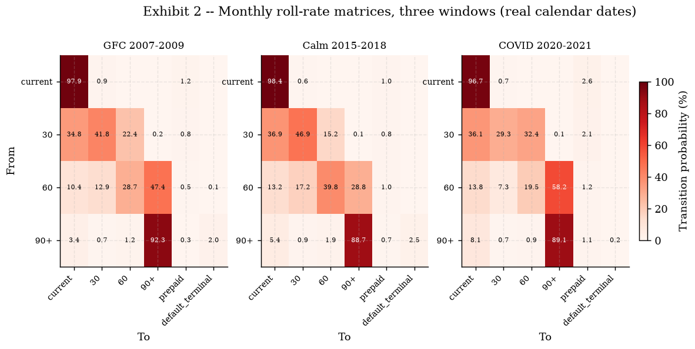
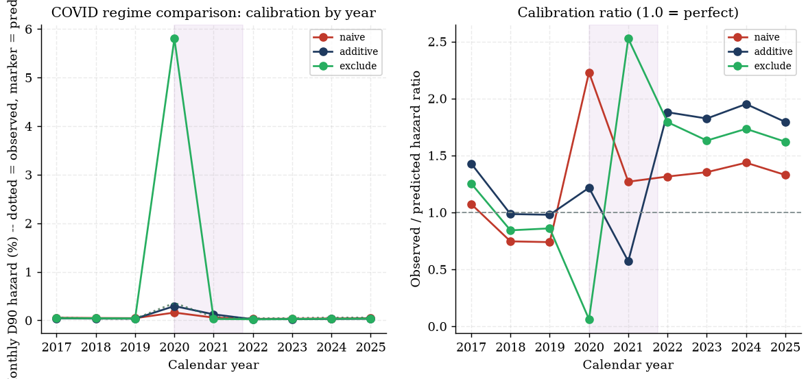
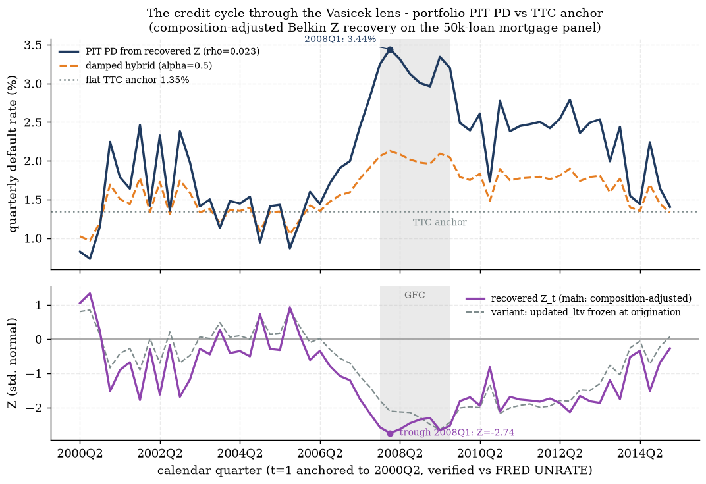
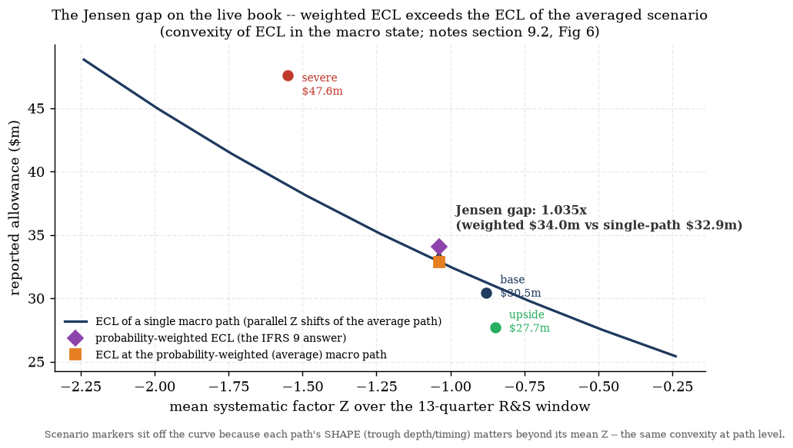
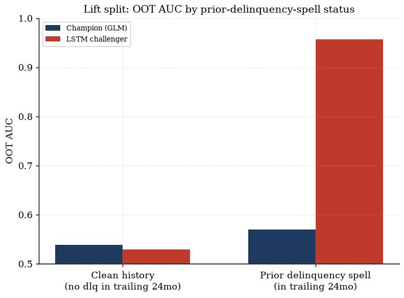

A full IFRS 9 expected-credit-loss (ECL) stack, built in two generations sharing one frozen computational core:
engine/{hazard,lgd,ead,staging,ecl}.py
— a loan-quarter panel → discrete-time cloglog PD hazards (default + prepayment, competing risk) →
two-stage cure×severity LGD → contractual EAD amortisation → relative-SICR staging → the ECL sum.
Fit on the DCR panel (a CoreLogic-style national mortgage panel, anonymised calendar).| Metric | Value | Source |
|---|---|---|
| DCR loan-quarter panel | 621,736 eligible rows / 49,974 loans, train t≤40 / OOT t=41–60 | outputs/panel/waterfall.md |
| DCR default hazard AUC | train 0.748 / OOT 0.661 | Hazard Model wiki page; outputs/hazard/fit_stats.md |
| DCR ECL gate | 187/187 tests; t=20 calm coverage 1.28% → t=40 stress coverage 28.4% (22×) | ECL Engine wiki page |
| Vasicek ρ (calibrated) | 0.0227 (orig-LTV variant 0.0633), Z trough 2008Q1 (−2.74) | outputs/vasicek/vasicek_report.md |
| Scenario ECL / Jensen gap | weighted $34.0m vs $32.9m at the averaged path = 1.035× | outputs/scenario_ecl/scenario_ecl_report.md |
| SFLLD panel | 837,500 loans / 39,522,565 loan-months, 17 vintages | wiki/pages/sflld-panel.md |
| SFLLD champion hazard AUC | train 0.8536 / OOT 0.6847 (DCR: 0.748/0.661) | outputs/freddie/hazard/hazard_report.md |
| COVID regime verdict | EXCLUDE window 2020-04..2021-09 (review overturned the author's additive-dummy recommendation) | outputs/freddie/hazard/hazard_report.md §3 |
| SFLLD realised-loss LGD | mean realised LGD (train) 0.2715; excess-loss loading 0.0148 vs DCR's 0.0255 | outputs/freddie/lgd/lgd_report.md |
| SFLLD cure AUC | train 0.6991 / OOT 0.4769 (honest-weak, below random — explained, not hidden) | outputs/freddie/lgd/lgd_report.md §4 |
| ALFRED-vintage backtest, 2007-12 | frozen-macro model underpredicted realised 36mo cum-D90 by 9.42× (0.928% vs 8.750%); hindsight ceiling still 1.90× under | outputs/freddie/backtest/backtest_report.md |
| ALFRED-vintage backtest, 2019-12 | hindsight-macro projection saturates: 71.519% predicted vs 4.601% realised = 0.06× | outputs/freddie/backtest/backtest_report.md |
| LSTM challenger | OOT AUC 0.9925 vs champion 0.6847; lift concentrated on prior-delinquency-spell loans (0.957 vs 0.570) — near-random on clean history (0.529 vs 0.539) | outputs/freddie/lstm/lstm_report.md |
| Test-suite gate history | 187 → 381 → 509 → 553 → 582 → 659/659 (current), zero regressions | wiki/memory/log.md; outputs/freddie/gate_phaseB.md |
| Component | Review verdict | Source |
|---|---|---|
ECL engine (engine/ecl.py) | Clean | wiki/pages/ecl-engine.md |
EAD (engine/ead.py) | Fixed (edge-case guard only) | wiki/pages/ead-model.md |
Staging (engine/staging.py) | Fixed (config plumbing bug + docstring overclaim) | wiki/pages/staging-model.md |
LGD (engine/lgd.py) | Fixed (documentation only) | wiki/pages/lgd-model.md |
| Vasicek / scenarios / satellite / challenger | Clean / Clean / Fixed (report-integrity) / Clean | wiki/pages/scenario-layer.md |
| Agent layer | Fixed (SSE deadlock test + NaN-422 edge) | wiki/pages/agent-layer.md |
| SFLLD hazard COVID recommendation | Overturned on review (additive dummy → exclude) | outputs/freddie/hazard/hazard_report.md §3 |
| SFLLD backtest realised-outcome timing | Critical bug found & fixed (disposition month → first-D90 month) | wiki/memory/decisions.md, 2026-07-18 |
| Phase-B gate | PASS, 659/659, frozen five NONE | outputs/freddie/gate_phaseB.md |
wiki/memory/decisions.md, 2026-07-08 entry.)data/panel/build_panel.py builds data/processed/panel.parquet from
622,489 raw DCR loan-quarter rows (50,000 loans). The eligibility waterfall
(outputs/panel/waterfall.md) is fully itemised over 7 steps — every dropped row is
accounted for, every lost default/payoff event is counted:
| # | Step | Rows dropped | Reason (abridged) |
|---|---|---|---|
| 1 | exact_duplicate_rows | 305 | verbatim duplicate rows (incl. doubled terminal rows on 3 loan ids) |
| 2 | id_collision_loans | 108 | 5 ids each contain two interleaved distinct loans |
| 3 | same_quarter_status_conflict | 7 | status-0 row shadowing a terminal row, same (id,time) |
| 4 | post_terminal_truncation | 0 | generic guard, recorded to prove it ran |
| 5 | nonpositive_origination_balance_loans | 270 | 18 loans, balance_orig_time missing-coded 0 |
| 6 | zero_balance_live_rows | 38 | non-terminal rows with balance ≤ 0 (missing-coded) |
| 7 | nonpositive_current_note_rate_rows | 25 | note rate missing-coded 0 → prepay incentive incomputable |
Final panel: 621,736 rows / 49,974 loans / 15,147 defaults / 26,580 payoffs (8,247 loans
right-censored); train = t≤40 (421,761 rows, 11,420 defaults); OOT = t=41–60 (199,975
rows, 3,727 defaults) — OOT is the stress window by construction
(wiki/pages/loan-panel.md).
wiki/memory/log.md, 2026-07-05 17:26 entry):
the panel's uer_time column matches FRED UNRATE quarterly at correlation 0.9963 / RMSE
0.15pp at exactly one offset ⇒ t=1 ≈ 2000Q2, t=60 ≈ 2015Q1. Cross-checks: UER peak t=39 ≈ 2009Q4
(US peak 10.0%), HPI peak t=25 ≈ 2006Q2, trough t=48 ≈ 2012Q1 (−35.3% drawdown). Macro columns are
genuine US national series on an anonymised loan clock; there is no true 2026 snapshot — the
panel ends ~2015Q1, so Day-3 scenarios are applied as deltas from the 2015Q1 jump-off (documented
framing).Flags kept, not dropped: orig_rate_missing (89,730 rows across 10,713 loans, 21.4% of
loans), 2,829 missing-state rows (state_orig_time_missing — state unused at this rung; the
rung-3 upgrade closes exactly this gap), 3,343 lag warm-up rows (time≤5). Updated LTV =
LTV_orig × (bal_t/bal_orig) × (hpi_orig/hpi_t), independently derived and verified equal
to the vendor's LTV_time field to 5e-9. Macro lags (uer_lag1/2,
uer_chg4_lag1, gdp_lag1, hpi_growth_lag1) built with a
groupby-shift, agreement asserted to 1e-9, zero lookahead. lgd_time populated iff a
default row (15,147); 9.8% of realised LGDs exceed 1 (max 8.52) — kept raw for the LGD model to
handle explicitly, never clipped upstream.
Source: Freddie Mac Single-Family Loan-Level Dataset, 17 sample vintages (2005–2010,
2014–2016, 2018–2025; 2011–2013 and 2017 were never downloaded — a documented coverage gap),
ingested by freddie/ingest.py + freddie/build_panel.py, macro merged by
freddie/macro.py (wiki/pages/sflld-panel.md;
outputs/freddie/eda/eda_report.md).
loan_orig.parquet from the
un-truncated tape, for competing-risk / LGD use. Sentinels (9999/999/99/'9') →
NaN, each documented.{POSTAL}UR monthly + {POSTAL}STHPI
quarterly (all-transactions), 54 states/territories; national fallback for GU/VI (UR) and GU/PR/VI
(HPI), documented. 108 cached CSVs enable offline reruns. No-lookahead quarterly→monthly HPI fill;
lag-1 columns mirror the DCR timing convention.freddie/ namespace, writes
only to outputs/freddie/ / data/processed/freddie/, and the Phase-A gate
verified the frozen engine files and data/processed/panel.parquet (DCR) untouched,
sha-recorded.Real geography, real cycle — what SFLLD buys over DCR
(outputs/freddie/eda/eda_report.md): 2007-vintage cumulative D90
reaches 16.26% by month 225 on book (vs 14.11% for 2006, 9.14% for 2008; every recovery/modern
vintage tops out below 5.48%). State heterogeneity on 2006–07 vintages: NV 38.0% / FL 32.6% / AZ 27.9%
vs VT 4.8% — a collateral-channel scatter (peak-to-trough HPI drawdown vs default rate) fitting slope
0.491, r=0.89, p=2e-17 across 49 states, invisible to a national-only panel.

borrower_assistance_status_code, versus 15.6% in the calm window. The
combined-vintage D90-entry rate's global peak is the COVID spike (1.775% in 2020-06, ~4.5× the
GFC's own peak of 0.396% in 2009-10) — a naive delinquency-based read would call COVID the bigger
credit event; it was not a loss event. This single finding drives the Phase-B COVID-regime decision
(§3.1.3).
uer_time,
gdp_time, hpi_time), anonymised-clock but calendar-anchored as above.data/scenarios/); severe path preserves +5.5pp UER exactly, rebased as
deltas onto the 2015Q1 jump-off, reversion to long-run means by quarter 21, 40-quarter horizon.realtime_start
tried), so HPI-as-known-at-T is a publication-lag truncation
(HPI_PUBLICATION_LAG_MONTHS=5) of the single current-vintage series, not a genuine
historical revision — declared, not hidden
(outputs/freddie/backtest/backtest_report.md §4–5).state_orig_time unused at that rung); rung-3's state-level FRED merge is exactly the
closing of that gap.engine/hazard.py)Discrete-time complementary log-log (cloglog) hazard — the grouped-duration analogue of a continuous-time Cox model — fit as cause-specific competing risks (default, prepayment):
with cumulative/marginal survival built from the per-quarter hazards: conditional hazard
$\lambda_t$, competing-risk survival $S(t)$, marginal event probability $S(t-1)\lambda_t$, cumulative
PD via pd_term_structure. API: fit_default_hazard(panel),
fit_prepay_hazard(panel), predict_hazard(model, df),
pd_term_structure(models, profiles, horizon).
Fit (train t≤40; outputs/hazard/fit_stats.md,
outputs/hazard/hazard_ratios.md):
| Model | n (fit) | events | train AUC | OOT AUC | McFadden R² |
|---|---|---|---|---|---|
| default | 418,418 | 11,354 | 0.7476 | 0.6609 | 0.0761 |
| prepay | 418,418 | 22,734 | 0.6839 | 0.5841 | 0.0503 |
(Wiki summary quotes the rounded 0.748/0.661 and 0.684/0.584 — same fit, display rounding.)
Coefficient table (default hazard, hazard ratios, outputs/hazard/hazard_ratios.md):
| Covariate | family | HR | 95% CI | p |
|---|---|---|---|---|
| Intercept | baseline | 0.2658 | [0.1534, 0.4608] | 2.35e-06 |
| FICO at orig. (per 100 pts) | borrower | 0.6314 | [0.6130, 0.6505] | <1e-16 |
| Updated LTV (per 10pp, at mean UER) | collateral | 1.2250 | [1.2100, 1.2402] | <1e-16 |
| Rate incentive (pp) | incentive | 1.1424 | [1.1317, 1.1532] | <1e-16 |
| Investor loan | borrower | 1.2091 | [1.1425, 1.2796] | 5.05e-11 |
| Condo | borrower | 1.0649 | [0.9793, 1.1580] | 1.41e-01 |
| Planned urban dev. | borrower | 1.0852 | [1.0129, 1.1626] | 2.01e-02 |
| Single family | borrower | 0.9909 | [0.9433, 1.0408] | 7.15e-01 |
| Unemployment level (lag 1) | macro | 0.6930 | [0.6544, 0.7338] | <1e-16 |
| Unemployment 4q change (lag 1) | macro | 1.8468 | [1.6989, 2.0077] | <1e-16 |
| HPI growth (lag 1) | macro | 0.0318 | [0.0148, 0.0683] | <1e-16 |
| GDP growth (lag 1) | macro | 1.0895 | [1.0645, 1.1151] | 4.47e-13 |
| LTV(10pp) × UER (double trigger, centered) | collateral | 0.9940 | [0.9885, 0.9997] | 3.75e-02 |
Per-variable rationale (outputs/variable_dictionary.md):
| Variable | Transform | Timing | Rationale | Expected | Fitted |
|---|---|---|---|---|---|
fico_s | FICO_orig/100 | static | ability/willingness to pay | PD ↓ | ✓ negative |
ltv10 ⚡ | updated_ltv/10, winsor 300 | current-quarter state | equity cushion / strategic-default trigger | PD ↑ | ✓ +0.2029/10pp |
loan_age | natural cubic spline df=5 | per-quarter | seasoning burn-in → peak risk → survivor selection | hump | ✓ peak 12q vs empirical 10q |
prepay_incentive ⚡ | note rate − market rate | current-quarter state | refinancing incentive | prepay ↑ | ✓ Spearman +0.95 |
investor_orig_time | raw flag | static | strategic-default propensity | PD ↑ | ✓ |
uer_lag1 | national UER level | lag 1q | cash-flow shock channel | net ↑ | ✓ net effect (see below) |
uer_chg4_lag1 | 4q UER change | lag 1q | labour-market momentum | ↑ | ✓ |
hpi_growth_lag1 | Δlog national HPI | lag 1q | collateral macro channel | PD ↓ | ✓ |
gdp_lag1 | GDP growth | lag 1q | activity channel | PD ↓ | ✓ |
dt_ltv_uer | centered LTV × centered UER | mixed | double trigger | ↑ | −0.006 (p=.04), disclosed §5 |
updated_ltv
(collateral indexation by current HPI) and prepay_incentive (real-time market rate —
lagging it would misprice the option). Any future covariate must follow the same rule.Double trigger: LTV×UER interaction coefficient is −0.006 (p=.04) — a slight in-sample substitution effect (the LTV slope flattens marginally at high unemployment; main effects + momentum already carry the joint stress response). Reported honestly, not asserted as the textbook-positive sign.
EDA verification (outputs/eda/, 5 PASS / 0 FAIL / 1 INFO): seasoning hump peak
age 10 (empirical); worst vintages = HPI-peak cohorts (48.8% = 2.4× median default rate); prepay
monotone in incentive; LGD bimodal (20.6% exact cures). A roll-rate/cure chart is impossible at the
DCR rung — no delinquency ladder — deferred to Freddie rung 3.
freddie/fit_hazard.py: a fresh monthly discrete-time cloglog D90 hazard on the SFLLD
loan-month panel, state-level macro, no left truncation (sampled from origination — an upgrade
over DCR). Only the DEFAULT (D90) cause-specific hazard is fit — no competing-risk prepayment
hazard in this refit (declared simplification).
Sample & split (outputs/freddie/hazard/hazard_report.md §1): champion train
= performance month ≤ 2016-12 (17,703,723 loan-months, 26,284 D90 events, 0.1485% monthly hazard);
OOT = performance month ≥ 2017-01 (21,818,842 loan-months, 18,309 events); COVID
(2020-04..2021-09) lands entirely inside OOT. Fit sample uses WESML (weighted exogenous
sampling maximum likelihood, Manski-Lerman): every train event row enters (26,284), plus a 5% random
subsample of non-event rows, 83,680 NaN-covariate rows dropped → 826,476 fit rows / 24,611 events;
controls reweighted freq_weight = 1/rate, events freq_weight = 1.
Coefficients vs the DCR champion (outputs/freddie/hazard/coefficients.csv,
dcr_sign_comparison.csv):
| term | coef | HR | p | sign | DCR expected |
|---|---|---|---|---|---|
| Intercept | −3.6043 | 0.027 | 0 | − | |
| occupancy[T.I] (investor) | 0.0943 | 1.099 | 4.69e-04 | + | |
| occupancy[T.S] (second home) | −0.1926 | 0.825 | 8.18e-09 | − | prior + (miss, explained) |
| loan_purpose[T.C] (cash-out) | 0.4379 | 1.550 | 4.02e-184 | + | + |
| loan_purpose[T.N] (no-cash refi) | 0.2704 | 1.310 | 1.69e-50 | + | prior − (miss, explained) |
| channel[T.B] (broker) | 0.1986 | 1.220 | 6.34e-09 | + | + |
| channel[T.C] (correspondent) | −0.2341 | 0.791 | 4.96e-14 | − | prior + (miss, explained) |
| channel[T.T] (TPO) | 0.3072 | 1.360 | 8.06e-109 | + | + |
| cr(loan_age,df=5) — 5 basis terms | −1.92 / −0.34 / −0.59 / +0.04 / −0.80 | — | — | hump | hump, ~36mo peak |
fico_s | −0.9257 | 0.396 | 0 | − | − |
dti_s | 0.2313 | 1.260 | 0 | + | n/a (no DTI at DCR rung) |
ltv10 | 0.3225 | 1.381 | 0 | + | + |
uer_lag1 | 0.0950 | 1.100 | 1.42e-208 | + | + (net) |
delta_uer_lag1 | 0.6671 | 1.949 | 2.97e-194 | + | + |
hpi_growth_lag1 | −3.3442 | 0.035 | 2.1e-12 | − | − |
occupancy[T.S]
fitted −0.193 against a prior of +; loan_purpose[T.N] fitted +0.270 against a prior of −;
channel[T.C] fitted −0.234 against a prior of +. All three are conditional effects
(given FICO/DTI/updated-LTV/macro), so a flipped categorical sign reads as composition within this
sample, not a causal claim — e.g. second-home borrowers clearing the same FICO/LTV bar as
owner-occupants default less here, and correspondent loans in this Freddie sample are not the
pre-crisis wholesale book the prior describes. The core risk drivers (FICO −, DTI +, updated LTV +,
UER +, ΔUER +, HPI growth −) all match their priors.Discrimination & seasoning: champion train AUC 0.8536, OOT AUC 0.6847, McFadden pseudo-R² (fit sample) 0.1197. Empirical train-window hazard-by-age profile: single hump peaking in the 42–48-month bin (0.256% monthly), corroborating the DCR champion's ~12-quarter (~36-month) peak. The fitted reference-row curve shows an additional, higher peak near 108 months that the raw profile does not — train rows with age ≥ 96 months come exclusively from the 2005–2008 crisis vintages (later vintages too young by 2016-12), so the late-age rise is unobserved cohort quality, not a seasoning effect; extrapolation beyond ~143 months has no train support.
The champion fit (train ≤2016-12) never sees COVID rows by construction. To test regime treatments, the estimation window is extended to ≤2021-09 and three variants are fit, all scored on the identical, genuinely unseen OOT2 window (>2021-09):
| variant | OOT2 AUC | delta_uer_lag1 | hpi_growth_lag1 |
|---|---|---|---|
| naive (no dummy) | 0.7553 | −0.204 (sign-flipped vs +0.667) | +0.013 (collapsed) |
| additive (regime dummy) | 0.7547 | −0.130 (still sign-flipped) | −6.584 (overshoots) |
| exclude (COVID rows removed) | 0.7509 | +0.774 (matches champion +0.667) | −3.307 (matches champion −3.344) |

The additive dummy itself fits +1.482 (hazard ratio 4.40) — it absorbs the 2020 D90 spike,
but it does not repair the structural macro block: delta_uer_lag1 stays
sign-flipped. A calendar-level dummy cannot undo a joint covariate-outcome distortion when the UER
spike and the forbearance-shielded delinquency ladder co-move inside the same window.
wiki/memory/decisions.md, 2026-07-18
20:47 entry): the author's initial recommendation was the additive dummy; the Fable adversarial
review overturned it, showing the report's own numbers contradicted the recommendation, and
rewrote the verdict number-first: EXCLUDE the window 2020-04..2021-09 for any structural or
scenario-conditional use — it is the only variant whose macro block survives economically signed.
Forbearance is to be handled as a scoring overlay, not an in-likelihood dummy. The OOT2 AUC spread
(0.7509–0.7553) is too small to override the structural argument.Residual caveat, all variants: 2022–2025 observed hazard runs ~1.62–1.79× the exclude-variant predictions — a post-COVID level shift for a backtest/ECL-overlay stage, not fixed by the regime treatment itself.
Refit on an independent control-sample seed (1234 vs 42): 0 sign flips; max relative
coefficient difference 0.486 on a near-zero spline term. Macro-term absolute swings between seeds:
delta_uer_lag1 0.128 vs nominal SE 0.0224 (~5.7× nominal SE);
hpi_growth_lag1 0.830 vs nominal SE 0.4759 (~1.7×). This is the expected WESML caveat:
freq_weights scales the 5% control subsample back to population size, so the reported
SEs/p-values approximate a full-population fit and exclude the Monte-Carlo noise of which controls
were sampled. seed_stability.csv — not the nominal p-values — is the operative
uncertainty statement for macro terms.
engine/lgd.py)Two-stage workout LGD (notes §10): cure logit × fractional-logit severity (Papke–Wooldridge), fit on 9,496 resolved train defaults (11,420 train defaults − 1,921 unresolved workouts − 3 NaN rows):
lgd_time is not a realised outcome (58%
coded 0); selection bias documented (cures resolve faster, biasing fitted cure up near the window end).uer_lag1 is positive (+0.277) — conditional
on updated LTV, stress-cohort defaulters cure more; robust in a fixed-runway subsample;
disclosed, not asserted.Fit quality: cure AUC 0.837 train / 0.769 OOT. Calibration: train gap −0.0005; OOT +0.047 (conservative, within the 0.05 tolerance). Fitted signs: cure ↓LTV (−0.764), severity ↑LTV (+0.107) — the collateral channel.
freddie/lgd.py reconstructs realised loss from Freddie's own cash-component fields
(net_sale_proceeds, mi_recoveries, non_mi_recoveries,
total_expenses, delinquent_accrued_interest,
zero_balance_removal_upb) — not an opaque vendor column like DCR's
lgd_time — and locks the sign convention with a fixture loan traced from the raw
servicing tape. Sign convention: realized_loss = -actual_loss_calculation, verified
reconciling to sub-dollar rounding.
Sample & outcome partition (44,593 had_d90_event loans, exhaustive/disjoint
partition):
| lgd_outcome | OOT | train | total |
|---|---|---|---|
| cure | 14,141 | 12,429 | 26,570 |
| liquidation | 430 | 14,480 | 14,910 |
| unresolved | 1,885 | 1,228 | 3,113 |
Zero-balance code 15 (whole-loan sale) is split, not lumped whole into unresolved: 853 of 922
code-15 D90 rows carry a populated actual_loss_calculation (92.5%) and are counted as
liquidation (Freddie's NPL-sale program); only the remaining 69 no-loss-field rows stay unresolved.
Severity denominator: upb_at_default (not
zero_balance_removal_upb) — the theoretically correct EAD base, observable at
default rather than years later at resolution. Reconciliation on 13,840 liquidation rows: correlation
0.9948, mean ratio 1.0018.
Stage 1 — cure logit (cure ~ ltv10 + fico_s + loan_age_at_default + C(era) +
C(property_state), train resolved n=26,896):
| term | coef | std_err | p_value |
|---|---|---|---|
| Intercept | 4.2819 | 0.4589 | 0.0000 |
| era[recovery 2009-10,14-16] | 0.8034 | 0.0406 | 0.0000 |
| era[modern 2018-2025] | 0.1498 | 0.7062 | 0.8320 (unidentified — see §5) |
ltv10 | −0.2475 | 0.0075 | 0.0000 |
fico_s | −0.3643 | 0.0243 | 0.0000 |
loan_age_at_default | 0.0066 | 0.0005 | 0.0000 |
(53 property_state fixed effects) | full table in outputs/freddie/lgd/cure_coefficients.csv | ||
Cure AUC: train 0.6991, OOT 0.4769.
Stage 2 — severity | liquidation (fractional logit, HC1 robust SEs;
sev_capped ~ ltv10 + C(liq_year_bucket) + is_judicial + C(disposition_type), train
liquidations n=13,444):
| term | coef | std_err | p_value |
|---|---|---|---|
| Intercept | −1.8372 | 0.1809 | 0.0000 |
| liq_year_bucket[2008-09 crash] | 1.3517 | 0.1803 | 0.0000 |
| liq_year_bucket[2010-12 peak workout] | 1.7275 | 0.1775 | 0.0000 |
| liq_year_bucket[2013-16 recovery] | 1.6983 | 0.1778 | 0.0000 |
| liq_year_bucket[2017-19 calm] | 1.3792 | 0.1816 | 0.0000 |
| liq_year_bucket[2020+ covid-modern] | 0.8751 | 0.1927 | 0.0000 |
| is_judicial[True] | 0.5199 | 0.0207 | 0.0000 |
| disposition_type[short_sale_or_charge_off] | −0.7200 | 0.0236 | 0.0000 |
| disposition_type[third_party_sale] | −0.3982 | 0.0290 | 0.0000 |
| disposition_type[whole_loan_sale] | −0.3477 | 0.0471 | 0.0000 |
ltv10 | 0.0307 | 0.0049 | 0.0000 |
Per-variable rationale (both stages):
| variable | economic rationale | expected direction |
|---|---|---|
ltv10 (cure) | equity cushion lets a distressed borrower sell/refi out of default | − |
ltv10 (severity) | less equity → bigger foreclosure shortfall | + |
fico_s | ability/willingness to work a resolution | + (weak) |
loan_age_at_default | seasoned defaulters cure less (burnout) | − |
era | underwriting-quality + macro-regime cohort effect | era-dependent |
property_state | regional foreclosure-process / servicing heterogeneity | state-dependent |
liq_year_bucket | workout costs + distressed-sale discounts track the disposition-year cycle | hump, peak 2010–12 |
is_judicial | judicial process is slower/costlier | + |
disposition_type | different cost structures by liquidation channel | disposition-dependent |
Excess-loss loading — the DCR vs SFLLD comparison: overall constant loading 0.0148
(vs DCR's 0.0255). Per-liquidation-year-bucket loading
(outputs/freddie/lgd/excess_loading_by_bucket.csv):
| liq_year_bucket | n | excess_loading | mean_severity |
|---|---|---|---|
| pre-2008 | 70 | 0.0020 | 0.1667 |
| 2008-09 crash | 962 | 0.0037 | 0.4348 |
| 2010-12 peak workout | 6,100 | 0.0064 | 0.5253 |
| 2013-16 recovery | 4,931 | 0.0243 | 0.5617 |
| 2017-19 calm | 1,001 | 0.0245 | 0.4808 |
| 2020+ covid-modern | 776 | 0.0417 | 0.3175 |
liq_year_bucket
is already a regression covariate. Verdict: a downstream ECL assembly under active
stress-period liquidation volume should prefer the bucket-specific loading over the pooled constant.
Portfolio-level summary:
| split | n_resolved | mean_realized_lgd | mean_predicted_lgd_aggregate |
|---|---|---|---|
| train | 26,896 | 0.2715 | 0.2819 |
| OOT | 14,566 | 0.0074 | 0.1170 |
(OOT mean realised LGD is dominated by COVID cures, not a like-for-like regime test — see §5.)
era[modern 2018-2025] fixed effect is fit on only 9 train rows — a mechanical
consequence of the calendar train/OOT split (cutoff 2019-01): a modern-vintage loan can only default
before 2019 if it reaches D90 within months of origination, so almost the entire modern-era D90
population falls in OOT by construction. Combined with the post-2019 COVID-forbearance base-rate shift
(observed cure rate jumps to 97–98% OOT vs 43–66% train across eras), the model's LTV/FICO/state-driven
discrimination — learned on a very different pre-2019 base rate — does not transfer. A genuine
small-sample-plus-regime-shift limitation, not a coding defect.engine/ead.py: contractual level-payment amortisation profiles (quarterly
compounding from the note rate; straight-line fallback for orig_rate_missing loans and
degenerate tiny rates, guarded at $1+r_q > 1$). ead_matrix(snapshot, horizon) produces
per-loan paths; ccf_ead(drawn, limit, ccf) reproduces the €14.0m revolver-CCF fixture
through the engine path.
Review verdict: fixed (edge-case guard only); 16 tests green.
engine/staging.py: genuinely relative SICR — lifetime PD now vs lifetime
PD at origination over the same remaining life (review-confirmed both legs to 1e-10
against independent term-structure runs; the classic "lifetime-from-origination" bug is explicitly
refuted). StagingConfig: ratio threshold (default 2×), absolute add-on
(0.5pp annualised), probation 2 quarters, 30-DPD backstop hook (structurally inert on
DCR — no delinquency ladder; documented).
| snapshot | staged rows | Stage 1 | Stage 2 | Stage 3 | default incidence |
|---|---|---|---|---|---|
| t=20 (calm) | 8,662 | 98.90% | 0.00% | 1.10% | 1.10% |
| t=40 (stress) | 13,863 | 20.98% | 75.78% | 3.25% | 3.25% |
Stage 2 is empty at t=20 under the 2×+0.5pp config in calm conditions — a threshold-sensitivity
insight, not a bug; the sensitivity exhibit (1.5×/2×/3×/4×) is the governance dial. At t=40 the
relative test fires book-wide as lifetime PDs re-mark against origination. Book size grows toward
mid-panel (8,662 loans at t=20 vs 13,863 at t=40) — vintage concentration near the HPI peak. Review
verdict: fixed (custom dpd_col config plumbing bug + a docstring overclaim); 16 tests
green.
engine/ecl.py:
through one shared survival/marginal kernel used by both the fixture-facing
ecl_schedule and the vectorised snapshot path — so the golden-fixture test pins the
production algebra directly (12m €4,952.83 / lifetime €16,571.39, matched to relative 1e-12 through
engine functions). Both 12-month and lifetime ECL are always computed; the reported allowance =
12m (Stage 1) / lifetime (Stage 2/3). EIR proxy: current note rate / 400 per quarter. Review verdict:
clean.
| snapshot | loans | EAD ($m) | reported allowance ($m) | coverage |
|---|---|---|---|---|
| t=20 (calm) | 8,662 | 1,917.8 | 24.5 | 1.279% |
| t=40 (stress) | 13,863 | 3,636.8 | 1,032.6 | 28.393% |
Stress multiplies book-level coverage by 22.2×. Coverage gradient by stage (t=40): Stage 1 3.551% < Stage 2 31.268% < Stage 3 63.646% — sanity gates pass.
Movement waterfall (t=20→t=40, $m): opening 24.5 → stage migration +3.9 → remeasurement +26.0 → derecognitions −21.2 → new loans +999.4 → closing 1,032.6; identity residual < $0.01. Decomposition is sequential and order-dependent: stage migration on surviving loans at frozen t=20 marks → remeasurement at the migrated stage → derecognitions at opening marks → new loans at closing marks.
Cross-check gates: ECL marginal-PD grid == staging lifetime PD on every loan (4e-16); LGD
grid == predict_components (2e-16). Full book runs in under a second per snapshot.
engine/vasicek.py)One-factor systematic-risk model:
Per-quarter Z is recovered by inversion, Z_t = invert_z(observed_t, expected_t, rho),
against a composition-adjusted TTC anchor: the book grows toward mid-panel, so raw default
counts mix vintage composition with the cycle, so the anchor is recomputed every quarter as the frozen
hazard scored on that quarter's actual at-risk rows under cycle-neutral macros (means:
uer_lag1=6.4000, uer_chg4_lag1=0.1600, hpi_growth_lag1=0.0096,
gdp_lag1=1.8281), loan-state covariates kept actual. ρ is calibrated so
$\text{Var}(Z_t)=1$ (Belkin), sample variance over 60 panel quarters.
| quantity | main | orig-LTV variant |
|---|---|---|
| calibrated ρ | 0.0227 | 0.0633 |
| mean(Z_t) | −1.145 | −0.861 |
| Z trough | 2008Q1 (Z=−2.74) | 2009Q2 (Z=−2.64) |
Both ρ estimates sit far below the notes' worked-example convention (0.12) and the Basel IRB residential-mortgage supervisory value (0.15, CRE31.10) — regulatory ρ is conservatism, not time-series fit. Anchor sanity: Gauss-Hermite $E_Z[\text{PD}_{\text{PIT}}] = \text{PD}_{\text{TTC}}$ proven to 1.91e-17; PIT↔Z round trip max error 6.00e-15.

engine/scenarios.py, data/ingest/dfast.py)DFAST 2026 paths applied as deltas rebased onto the 2015Q1 jump-off (severe path's +5.5pp UER preserved exactly); upside = damped mirror ×−0.35; reversion to long-run means by quarter 21, 40-quarter horizon; weights 50/25/25 (base/severe/upside), SPF-percentile anchoring documented as a named enhancement, not built.
engine/satellite.py)Pipeline: scenario macro path → satellite → Z path per scenario → PIT-conditioning of the frozen default hazard per loan-quarter at the quarterly-hazard level (standard practical approximation), TTC baseline scored at panel-mean macros → the frozen ECL sum over the remaining contractual life.
Scenario ECL, t=60 (2015Q1) live book, 7,849 exposures:
| scenario | weight | 12m ECL ($m) | lifetime ECL ($m) | reported allowance ($m) | coverage |
|---|---|---|---|---|---|
| upside | 0.25 | 27.4 | 289.6 | 27.7 | 1.654% |
| base | 0.50 | 30.2 | 282.9 | 30.5 | 1.820% |
| severe | 0.25 | 47.4 | 296.2 | 47.6 | 2.843% |
| probability-weighted | 1.00 | 33.8 | 287.9 | 34.0 | 2.034% |
| at the averaged macro path | — | 32.6 | 286.2 | 32.9 | 1.965% |

Why our ratio is far below the notes' ~1.9× toy example — honest decomposition:
Weights sensitivity (governance exhibit): 50/25/25 (adopted) → $34.0m; 40/30/30 → $34.8m (+2.1%); 60/20/20 → $33.3m (−2.1%). Scenario probabilities are not statistically identified; the ~2% swing across reasonable weightings is small next to the severe-vs-base scenario gap (1.56× on the allowance).
Sanity gates, all PASS: anchor round-trip 4.2e-17/1.9e-17; unconditioned wrapper == frozen ECL engine, max abs diff 0.00e+00; allowance ordering severe > base > upside (47.6 > 30.5 > 27.7); Jensen: weighted > averaged-path on both reported (1.0353×) and lifetime (1.0058×) measures.
challenger/mlp.py) — DCR rungtorch 2.12.1+cu130 on RTX 4060; like-for-like covariates (12/12 programmatic match with the champion GLM), no age spline, no hand-built LTV×UER interaction.
| champion | challenger | |
|---|---|---|
| form | cloglog GLM, cr(age,df=5), centered LTV×UER | MLP (64, 32), ReLU, dropout 0.2 |
| train AUC | 0.7476 | 0.7632 |
| OOT AUC | 0.6609 | 0.6417 |
Champion wins OOT (0.6609 vs 0.6417) though the challenger wins in-sample (0.7632 vs 0.7476) — the empirical justification for challenger-never-champion. PSI train→OOT: champion 3.711, challenger 0.763 — both "large shift" (the cycle moving through the scores, expected for a PIT model). Review verdict: clean.
freddie/lstm.py) — SFLLD rungAnswers one question: does delinquency-path memory (trailing 24-month dlq/UPB history) add discrimination beyond the champion hazard's current-state-only view? Scored on the identical champion train/OOT split.
| split | n | events | champion AUC | LSTM AUC | Δ |
|---|---|---|---|---|---|
| TRAIN | 16,059,126 | 24,611 | 0.8536 | 0.9964 | +0.1429 |
| OOT | 20,621,912 | 16,832 | 0.6847 | 0.9925 | +0.3078 |
| group | n | events | champion AUC | LSTM AUC | Δ |
|---|---|---|---|---|---|
| Clean history (no prior 24mo delinquency) | 19,643,934 | 40 | 0.5386 | 0.5287 | −0.0098 |
| Prior delinquency spell | 977,978 | 16,792 | 0.5698 | 0.9570 | +0.3872 |
The champion cannot distinguish these two groups by construction (dlq_num is not one
of its covariates at all). The LSTM's edge is entirely concentrated on loans with a prior
delinquency spell (+0.387 AUC); on clean-history loans both models are near-random (0.529 vs
0.539, 40 events). Path memory is delinquency-state memory — it does not see farther ahead on
clean books.

This is the direct evidence for the path-dependence hypothesis, with the report's own caveat that the forbearance-era delinquency-ladder distortion may inflate part of the lift concentrated in the 2020–21 window — flagged, not resolved. Best epoch 3/9 (time-based validation split, cutoff 2015-12-01, best val AUC 0.9963). 19/19 tests; GPU (RTX 4060); review: no correctness bugs.
The eight compute_*.py verification scripts the underlying IFRS-9 study notes cite but
never shipped, recreated 2026-07-05 from the notes' worked examples (8 author + 8 adversarial-review
agents; all verdicts clean, no hardcoding). Interface: each module derives
RESULTS: dict[str, float] and holds the notes' printed values in TARGETS;
tests/test_fixtures.py asserts agreement within one unit of the last displayed digit.
| script | worked example | headline value |
|---|---|---|
| compute_ecl | §3 12m-vs-lifetime; §10 workout LGD; §12 revolver EAD | 12m €4,952.83 / lifetime €16,571.39 (ratio 3.35); 31.0% discounted LGD; €14.0m EAD |
| compute_pd | §6 WOE/IV; §7 Merton | IV=0.4403; DD=1.2116 → PD 11.28% |
| compute_vasicek | §8 PIT conditioning | 7.34% @ Z=−2, 1.43% @ Z=0, 0.17% @ Z=+2 |
| compute_scenarios | §9 probability-weighted ECL | €1.74m ≈ 1.9× the €0.90m average-scenario ECL |
| compute_grossup | §9 lifetime gross-up | ×1.29 (60m PD 9.4% → lifetime 12.1%) |
| compute_ncl | §11 discounted realised loss | face 12.5% UPB → 20.2% EIR-discounted |
| compute_rollrate | §11 D180→D90 bridge | R=0.60 |
| compute_validation | §13 binomial/Jeffreys + PSI | five-band grade backtest |
Gate rule: the engine is frozen only when pytest tests/ is green; any engine
change after the freeze re-runs the full suite.
| Gate | Tests | Date | What shipped |
|---|---|---|---|
| Engine freeze | 187/187 | 2026-07-05 | 133 fixtures + 16 EAD + 8 LGD + 16 staging + 14 ECL; engine/ frozen |
| Day 4 (agent, HF Space public) | 381/381 | 2026-07-07 | LangGraph Tier-1 router + refusal, FastAPI+Preact, Docker deploy |
| App v2 + Tier-2 sandbox | 509/509 | 2026-07-08 | 5-tab north-star app, Tier-2 analyze_data sandbox |
| SFLLD Phase A | 553/553 | 2026-07-17 | 513 baseline + 40 freddie tests (panel/EDA) |
| REASONED route | 582/582 | 2026-07-17 | 3-way router split (computable/reasoned/refuse) |
| SFLLD Phase B | 659/659 | 2026-07-18 | 582 + 77 freddie (hazard/LGD/backtest/LSTM refit) |
Intermediate gates not listed above (day-3 scenarios 278/278, stretch Tier-3+MCP
422/422, UI v3 513/513) are recorded in wiki/memory/log.md and the corresponding
outputs/gate/*.md reports; every gate is zero-regression on the one before it.
DCR: MLP challenger wins in-sample (0.7632 vs 0.7476) but loses OOT (0.6417 vs champion 0.6609) — champion retained. SFLLD: LSTM wins OOT AUC overall (0.9925 vs 0.6847) but the honest lift decomposition shows the advantage is entirely delinquency-state memory on loans with a prior delinquency spell, not genuine path-dependence on clean books — both challengers stay challenger-never-champion by explicit project policy.
freddie/backtest.py: the champion hazard spec is refit-in-time at 5 historical
pseudo-reporting dates on only the data and macro vintages that actually existed then, projected
forward 36 months, and compared to what actually happened. Two macro scenarios: (a) frozen
(naive PIT extrapolation — the scenario IFRS-9 para 5.5.17 exists to prevent) and (b)
actual/hindsight (the ceiling a perfect overlay could achieve).
| T (reporting date) | realised D90 (36mo) | predicted (frozen) | miss (frozen) | predicted (hindsight) | miss (hindsight) |
|---|---|---|---|---|---|
| 2007-12-01 | 8.750% | 0.928% | 9.42× | 4.613% | 1.90× |
| 2009-12-01 | 6.569% | 5.554% | 1.18× | 4.658% | 1.41× |
| 2015-12-01 | 1.397% | 1.857% | 0.75× | 1.855% | 0.75× |
| 2019-12-01 | 4.601% | 0.920% | 5.00× | 71.519% | 0.06× |
| 2021-12-01 | 1.161% | 1.734% | 0.67× | 1.229% | 0.94× |

delta_uer_lag1, fitted on a
history where month-on-month UER moves are a few tenths of a point; fed the actual April-2020 print
(+10.6pp in one month), the cloglog linear predictor implies a hazard multiplier in the tens of
thousands, saturating the monthly hazard toward 1 for much of the book — faithful extrapolation ~20
standard deviations outside training support, the purest form of the parameter/spec model risk this
backtest exists to expose. Connective finding: the delinquency-count miss shown here is
the roll-rate half of the story; the loss half did not spike commensurately — the LGD module's
modern-era OOT cure rate is 97.9% (§3.2.2), because forbearance resolved the 2020 D90 spike as cures,
not liquidations. A bank reading only the D90-hazard miss ratio would overstate the COVID ECL shock.ALFRED coverage: as of 2007-12-01, 3 of 54 states' UER series fell back to the national UNRATE vintage. FHFA STHPI has no ALFRED vintage archive at all — every "as known at T" HPI value is a publication-lag truncation (§2.3).
wiki/memory/decisions.md, 2026-07-18):
realised outcomes are timed by the first-D90 month from the truncated panel, not the
disposition month — an earlier draft used disposition-month timing, which the review caught and
fixed as a critical bug before this exhibit was finalised.outputs/freddie/hazard/calibration_by_year.png/.csv):
champion scored on the full panel across calendar years; the 2020 row alone shows observed 0.357% vs
predicted 4.162% monthly — the champion scoring straight through the forbearance window with pre-COVID
coefficients (macro extrapolation, not a defect — see §3.1.3).state_uer_effect.png/.csv): predicted vs observed hazard
by state uer_lag1 quartile, scored on OOT rows.covid_calibration_comparison.png, Exhibit 7 above):
naive/additive/exclude calibration side-by-side across the extended window.outputs/freddie/lstm/calibration_comparison.png/.csv): observed vs predicted monthly D90
hazard by calendar year, forbearance window shaded, both models.Pulled deliberately from the decision/question registers and every report's own caveat sections — the brief here is completeness, not flattery.
The champion hazard's structural macro block is only valid outside the 2020-04..2021-09 forbearance window; the EXCLUDE verdict (§3.1.3) is a review overturn of the author's own initial recommendation, and even the exclude variant shares a residual caveat with naive/additive: 2022–2025 observed hazard runs ~1.62–1.79× the exclude-variant predictions — a post-COVID level shift not fixed by the regime treatment. The backtest's 2019-12 hindsight run (§4.4) shows the mirror-image failure mode: even a perfect macro overlay saturates the linear hazard functional form when fed an out-of-training-support UER shock. Both are declared as the honest, unresolved edges of the same underlying limitation — the champion's functional form was never identified in a forbearance-shielded or 20-sigma macro regime.
Nominal standard errors on the SFLLD champion hazard are shipped with a documented caveat: seed-pair
coefficient swings up to 5.7× nominal SE on macro terms (§3.1.4). seed_stability.csv
is the honest uncertainty statement; nominal p-values should not be read as the operative significance
test for macro coefficients.
The SFLLD champion's fitted age-baseline spline shows a second, higher hump near 108 months that the raw empirical hazard-by-age profile does not — an artifact of the 2005–2008 crisis vintages being the only cohorts old enough to populate that age bin by 2016-12 train cutoff, not a genuine second seasoning peak. Extrapolation beyond ~143 months of age has zero train support.
SFLLD's cure-logit OOT AUC (0.4769) is below random — a mechanical consequence of the
era[modern 2018-2025] fixed effect being fit on only 9 train rows under the calendar
train/OOT split, compounded by the COVID-era base-rate shift. This is disclosed as a genuine
small-sample-plus-regime-shift limitation, explicitly not a coding defect, but it means the SFLLD cure
model's OOT discrimination should not be relied on for forward scoring without further work.
DCR and SFLLD both fit severity/cure on resolved workouts only — unresolved
lgd_time/had_d90_event rows are not a realised outcome. Cures resolve faster
than liquidations, so the fitted cure rate is biased upward (and severity downward) for cohorts near
the panel's own window end. For SFLLD this is quantified by default year: the true exposure is
recency, not specifically the COVID cohort — default year 2025 is 54.2% unresolved simply
because those D90s have not had time to reach a terminal disposition, not because they are inherently
different in kind.
Unlike the DCR champion's dual cause-specific hazard, the SFLLD hazard refit fits only the D90 default cause — no competing-risk prepayment hazard (declared simplification). This also means the SFLLD refit cannot itself decompose prepayment-driven survival the way the DCR engine's $S(t)$ does.
SFLLD's default label (D90 absorbing) is a delinquency-status event, not a loss event — and the COVID EDA finding (§2.2) is precisely that these two can diverge sharply: the 90+→liquidation roll rate collapsed >10× during forbearance while the D90-entry rate spiked to 4.5× the GFC peak. Any consumer of the SFLLD hazard's PD must pair it with the LGD module's realised-loss view to avoid overstating a delinquency-status shock as an economic loss shock — the backtest's connective finding (§4.4) states this explicitly.
The systematic-risk model is single-factor (one Z per period, common to the whole book); no sector,
geography, or product-segment factor structure. The main-anchor Z is only approximately TTC
because updated_ltv is HPI-indexed and so still carries part of the collateral cycle into
the "loan-state" covariates — the orig-LTV variant (ρ=0.0633) brackets this from the other side but
ignores genuine amortisation/equity build; truth lies between, both are reported.
updated_ltv held frozen for the full 36-month projection in
both scenarios (no re-derived amortisation/prepayment path); projection is expected-value hazard
roll-forward, not a stochastic simulation; loans with a missing static covariate are excluded from
both sides of the comparison (~2.5%–14% of the book by date, and the excluded subpopulation runs
riskier than the scoreable book — the exhibit's cohort therefore understates the whole-book realised
rate).dlq_num
capped at 6; "prior delinquency spell" defined over the same 24-month window the model sees, not full
lifetime history; single architecture/seed, no hyperparameter search or ensembling (unlike the
champion's seed_stability.csv); no competing-risk prepayment head or LGD/EAD integration.JUDICIAL_STATES is a single static classification (no
within-sample regime changes); no downturn add-on (point-in-time LGD, matching DCR);
predict_components/predict_lgd are diagnostic tools scored on already-resolved
history only — not a forward-scoring API for a still-performing loan (unlike DCR's severity
stage, whose covariates are all forward-available via a macro-scenario path); wiring this into a live
scenario-conditional ECL assembly needs a projected liquidation-year substituted for the realised
one — documented future work, not built.SFLLD vintages 2011–2013 and 2017 were never downloaded — a documented gap, not filled by interpolation or assumption. GU/VI have no state HPI/UER series at all; PR has UER but no HPI — any state-level feature carries the national-fallback flag through rather than silently blending it in.
Narrations may quote unrounded floats (the verbatim-number check is strict); single-worker SSE demo limitation documented; the REASONED-route guard checks a number's magnitude exists in a legal source, not its semantic attribution — an inherent limitation across all three router outcomes, recorded after an adversarial review confirmed a live spelled-out-number bypass ("tens of millions") that was subsequently fixed for the digit case but not for the underlying attribution gap.
engine/{hazard,lgd,ead,staging,ecl}.py were frozen 2026-07-05 once the 187/187 gate
passed. Any post-gate structural change to engine/ requires the full test suite
re-run plus a decision-register entry. Enforcement is a code fingerprint scan
(scan_code.py --fingerprints knowledge/code_fp.json) that classifies every frozen file
NONE / COSMETIC / STRUCTURAL on each gate; the Phase-B gate confirms all five frozen files
NONE, cross-checked with a git-blob sha256 belt-and-braces comparison against HEAD.
data/processed/panel.parquet (the DCR panel) is sha-pinned at every gate and confirmed
byte-identical.
wiki/memory/
decisions.md, 2026-07-07 13:23 entry, binding for any future dataset): (1) one canonical schema
per dataset panel, asserted by a schema test; the engine consumes only the contract; (2) the engine
stays frozen and stateless — no cross-dataset coefficient inheritance is even possible; (3) all
dataset-tuned calibrations (SICR thresholds, cure definition, satellite lags, ρ) are dataset-scoped and
re-estimated, never inherited; (4) outputs and wiki pages are dataset-namespaced; (5) one
uv.lock across analyses for attribution.docs/api_contract.md is the single source of truth for the UI/API boundary, exercised
field-by-field by tests/test_contract.py; the UI's api.js never invents
fields — a lesson from a Day-4 production incident where the UI was built in parallel against
invented draft shapes and the extra=forbid pydantic contract rejected them live. Every
subsequent UI addition (v2 tabs, v3 AI-explain prefixes, the REASONED route's UI wiring) is
contract-tested before ship.
rerun_ecl baseline whitelist, prefixed [REASONED — interpretation, not engine
output]. An adversarial review confirmed a live spelled-out-number bypass (the router
LLM did its own subtraction and verbalised it as "tens of millions" to dodge the digit regex) and it
was fixed with _spelled_number_violation() wired into all three guards
(reasoned/narration/docs), with regression tests.shock_macro therefore applies every shock as a
co-moving move along the DFAST severe-minus-base direction (loadings normalised to the named
variable), with per-concept deltas returned transparently — without this, the flagship demo question
would return delta=0.outputs/agent_log/*.jsonl — a replayable audit
trail.wiki/memory/decisions.md) — append-only, one entry per
material decision with context, options, the call, and rationale; every scope cut is recorded here.wiki/memory/log.md) — append-only, one entry per working session,
what was read, what changed, what's next; the resume ritual for a fresh session.wiki/memory/questions.md) — append-only, struck
through with a pointer to the resolving page when answered.outputs/gate/*.md, outputs/freddie/gate_phaseA.md,
gate_phaseB.md) — one report per gate, each with the test count, isolation check,
fingerprint scan, and headline-number cross-reference against the underlying module reports.The wiki (wiki/index.md + 20 pages under wiki/pages/, 21 pages total per
wiki/.wiki/audit.json + the three memory
registers) is the compiled, interlinked knowledge base this MDD is generated from — never re-derived
from raw sources, always citing the underlying outputs/**/*.md report as the number's
system of record. This document is the pageindex-plus HTML-notes export of that wiki, per
the Day-3 documentation decision (wiki/memory/decisions.md, 2026-07-07 12:55 entry):
"formal MDD = pageindex-plus HTML export of the wiki."
| Area | Path | Status |
|---|---|---|
| Frozen engine | engine/{hazard,lgd,ead,staging,ecl}.py | FROZEN, gate 187/187 |
| DCR panel builder | data/panel/build_panel.py → data/processed/panel.parquet | frozen artifact |
| Scenario layer | engine/{vasicek,scenarios,satellite}.py, data/ingest/dfast.py | reviewed clean/fixed |
| MLP challenger | challenger/mlp.py | reviewed clean |
| Freddie ingest/panel/macro | freddie/{ingest,build_panel,macro,eda}.py | Phase-A gate PASS |
| Freddie hazard/LGD/backtest/LSTM | freddie/{fit_hazard,lgd,fit_lgd,backtest,lstm,fit_lstm}.py | Phase-B gate PASS |
| Agent layer | agent/{tools_tier1,tools_tier2,graph,tier3_retrieval,mcp_server}.py, app/api/main.py | reviewed fixed, live |
| UI | app/ui/src/* | UI v3 live on HF Space |
| Golden fixtures | tests/fixtures/compute_*.py, tests/test_fixtures.py | 133/133, immutable |
| Wiki | wiki/index.md, wiki/pages/*.md, wiki/memory/*.md | source of this MDD |
| Module | Reports & data |
|---|---|
| DCR hazard | outputs/hazard/{fit_stats.md,hazard_ratios.md,pd_term_structure.csv} |
| DCR LGD | outputs/lgd/lgd_report.md |
| DCR EAD | outputs/ead/* |
| DCR staging | outputs/staging/staging_report.md |
| DCR ECL | outputs/ecl/ecl_report.md, waterfall.json |
| DCR panel | outputs/panel/{waterfall.md,waterfall.json} |
| DCR EDA | outputs/eda/* |
| Vasicek | outputs/vasicek/{vasicek_report.md,z_path.csv,credit_cycle.png} |
| Scenario ECL | outputs/scenario_ecl/{scenario_ecl_report.md,scenario_ecl_summary.csv,jensen_gap.png} |
| Challenger (MLP) | outputs/challenger/{scorecard.md,reliability.png,psi_scores.png,perm_importance.png} |
| Gates | outputs/gate/*.md (day3/day4/appv2/stretch/uiv3/reasoned_route) |
| Freddie EDA | outputs/freddie/eda/{eda_report.md,exhibit1-5*.png} |
| Freddie hazard | outputs/freddie/hazard/{hazard_report.md,coefficients.csv,dcr_sign_comparison.csv,seed_stability.csv,covid_*.csv,*.png} |
| Freddie LGD | outputs/freddie/lgd/{lgd_report.md,cure_coefficients.csv,severity_coefficients.csv,excess_loading_by_bucket.csv,*.png} |
| Freddie backtest | outputs/freddie/backtest/{backtest_report.md,predicted_vs_realized_*.csv/.png,metrics_*.json} |
| Freddie LSTM | outputs/freddie/lstm/{lstm_report.md,calibration_comparison.*,lift_split.png,metrics.json} |
| Freddie gates | outputs/freddie/{gate_phaseA.md,gate_phaseB.md} |
| Variable dictionary | outputs/variable_dictionary.md |
All 8 exhibits are embedded inline at their point of use in §§2–4 above; this is the consolidated index with source paths.
| # | Exhibit | Source | Section |
|---|---|---|---|
| 1 | Credit cycle (Vasicek Z, calendar axis) | outputs/vasicek/credit_cycle.png | §3.6.1 |
| 2 | The Jensen gap | outputs/scenario_ecl/jensen_gap.png | §3.6.3 |
| 3 | SFLLD vintage curves | outputs/freddie/eda/exhibit1_vintage_curves.png | §2.2 |
| 4 | COVID roll-rate matrices | outputs/freddie/eda/exhibit2_roll_rate_matrices.png | §2.2 |
| 5 | ALFRED-vintage backtest honesty panel, 2007-12 | outputs/freddie/backtest/predicted_vs_realized_200712.png | §4.4 |
| 6 | Severity by liquidation year, 2006–2025 | outputs/freddie/lgd/severity_by_liq_year.png | §3.2.2 |
| 7 | COVID regime-variant calibration comparison | outputs/freddie/hazard/covid_calibration_comparison.png | §3.1.3 |
| 8 | LSTM lift-split, honest path-dependence decomposition | outputs/freddie/lstm/lift_split.png | §3.7.2 |
659/659 tests passing (uv run --no-sync pytest tests/ -q), zero
failures/errors/skips, frozen five all NONE on the fingerprint scan, DCR
panel.parquet byte-identical to its Phase-A-recorded sha256
(outputs/freddie/gate_phaseB.md).
Model Development Document — IFRS 9 ECL Engine &
Agentic Copilot · compiled from wiki/ + outputs/**, 2026-07-19 · every
number verbatim and source-cited, nothing recomputed.